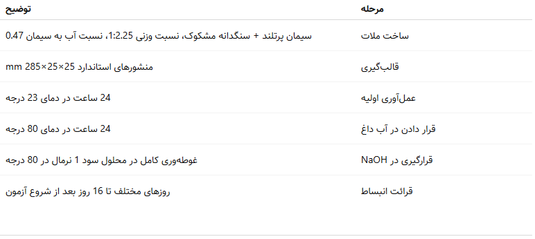
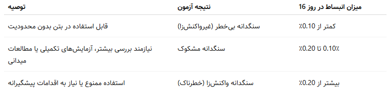
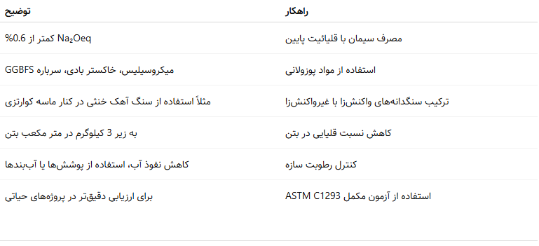

واکنش قلیایی-سیلیسی در بتن - تهدیدی خاموش، ولی قابل پیشبینی و پیشگیری
مقدمه: وقتی بتن خودش را میشکند!
فرض کنید یک سازه بتنی تازه ساخت در ظاهر کاملاً سالم به نظر میرسد. اما چند سال بعد، روی سطح آن ترکهایی تصادفی و شعاعی ظاهر میشود. ترکهایی که نه بهدلیل بارگذاری بیش از حدند، نه بهخاطر یخزدگی یا خوردگی میلگرد. علت چیست؟
این ترکها، نشانههای واکنش شیمیایی داخلی بتن با خودش هستند؛ پدیدهای به نام واکنش قلیایی-سیلیسی (ASR).
واکنش قلیایی-سیلیسی چیست؟
ASR زمانی رخ میدهد که:
- سنگدانهها حاوی سیلیس واکنشپذیر باشند، و
- قلیاییهای موجود در سیمان (Na⁺ و K⁺) با آنها در حضور رطوبت واکنش دهند.
حاصل این واکنش، تولید ژل قلیایی-سیلیسی است که آب جذب کرده و منبسط میشود. این انبساط باعث ایجاد فشار داخلی، ترک، کاهش مقاومت و در نهایت تخریب بتن میگردد.
مثال واقعی: تخریب سدها و باندهای فرودگاه
- در سد Blue Ridge آمریکا، ترکهای ناشی از ASR، هزینهای معادل دهها میلیون دلار برای ترمیم ایجاد کردند.
- باند فرودگاه Denver در دهه ۹۰ میلادی، تنها پس از چند سال بهرهبرداری دچار ASR شد و نیاز به بازسازی بخشهایی از آن پیدا کرد.
این پدیده بهویژه در سازههای با عمر بالا و در مناطق مرطوب یا گرم، تهدید جدی برای دوام بتن است.
چگونه وجود ASR را تشخیص دهیم؟
برای تشخیص پتانسیل واکنش قلیایی سنگدانهها، دو مرجع مهم وجود دارد:
- استاندارد ASTM C1260-14
- استاندارد ملی ایران ISIRI 8753 (ترجمه و بومیسازی شده از ASTM C1260)
- بند ت-6-4-6 آییننامه آبا (کنترل واکنش قلیایی سنگدانهها در طراحی و اجرا)
آزمون تسریعشده ملات منشوری (Mortar Bar Method)
گامبهگام طبق ASTM C1260 و ISIRI 8753:

تفسیر نتایج:

آییننامه آبا چه میگوید؟ (بند ت-۶-۴-۶)
- اگر آزمایشهای سریع سنگدانه را مشکوک نشان دهند، باید با آزمونهای بتن با زمان طولانیتر تأیید یا رد شوند.
- اگر چنین آزمونی انجام نشود، سنگدانه مشکوک غیرقابل مصرف تلقی میشود.
- آزمایش پتروگرافی، بررسی میدانی عملکرد گذشته و آزمونهای ترکیبی بتن توصیه میشوند.
- راهکارهای کنترل ASR مثل مصرف مواد پوزولانی، کاهش قلیائیت سیمان، یا استفاده از سنگدانههای آهکی باید بررسی شوند.
چگونه با ASR مقابله کنیم؟ (اقدامات پیشگیرانه)

تجربهی آزمایشگاهی: چه چیزهایی مهم است؟
- آزمونهها نباید با دیواره ظرف یا یکدیگر تماس داشته باشند.
- دمای دقیق، زمانبندی و نسبتها در انبساط تأثیر مستقیم دارند.
- روش آزمون C1260 برای انتخاب اولیه سنگدانه بسیار مفید است، ولی همیشه باید در کنار اطلاعات مکمل و تجربه میدانی تفسیر شود.
جمعبندی:
واکنش قلیایی-سیلیسی اگر نادیده گرفته شود، میتواند به آرامی، در طی سالها، سازه را از درون متلاشی کند. ولی خبر خوب این است:
این پدیده قابل پیشبینی است،
قابل آزمایش است،
و مهمتر از همه، قابل کنترل است.
در طراحی و اجرای پروژههای مهم، خصوصاً در مناطق مرطوب، گرم و با عمر بالا، توجه به ASR نشانهی بلوغ فنی تیم اجرایی است.
منابع:
- ASTM C1260-14 – Standard Test Method for Potential Alkali Reactivity of Aggregates (Mortar-Bar Method)
- ISIRI 8753 – قابلیت واکنش سنگدانهها با قلیاییها به روش تسریعشده ملات منشوری
- آییننامه بتن ایران (آبا) – بخش دوام، بند ت-۶-۴-۶
بهترین مطالب هر ما
ارسال میشه به صندوق پستی شما!
این بالا کلیک کن و ایمیلت رو بنویس
ثبت